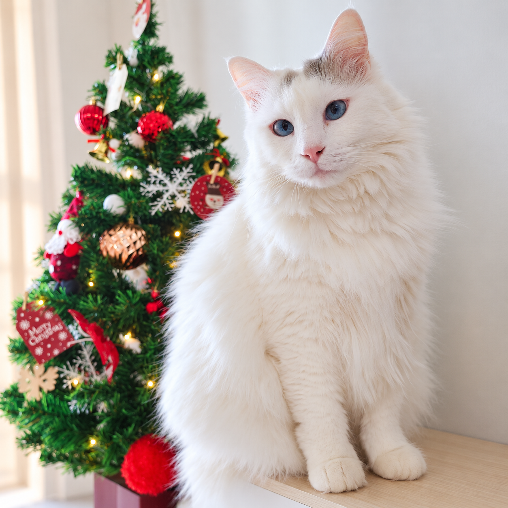
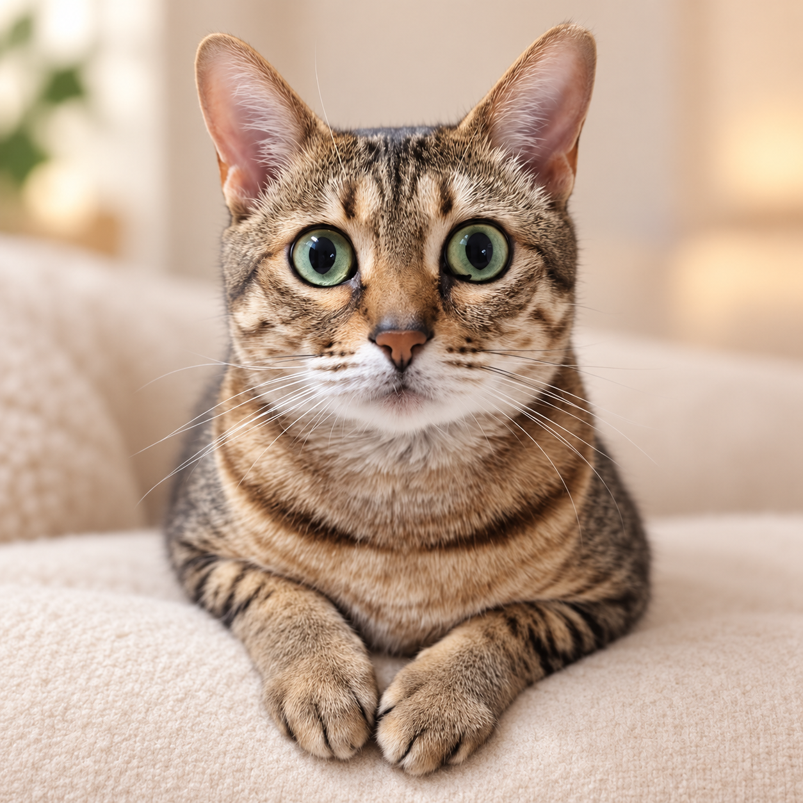
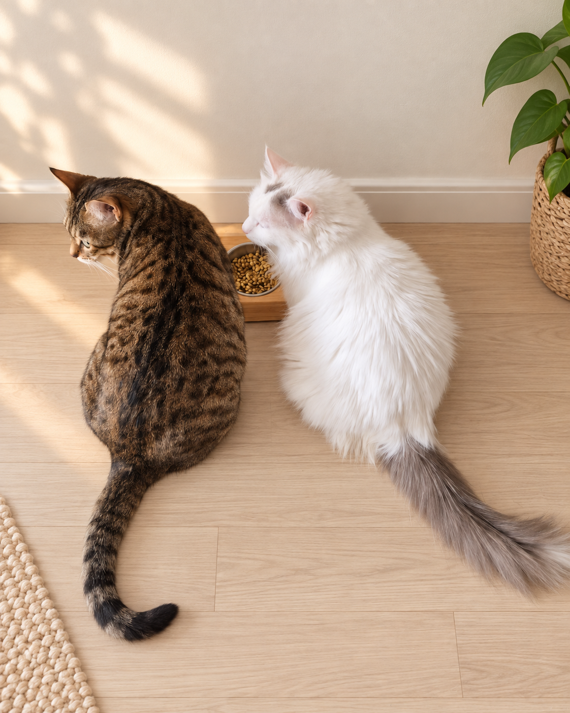

CAT 01 / COCO
Coco
Ragdoll
Birth · 2018.07.27
보드라운 흰 털과 맑은 파란 눈
BLUE EYESSOFTROUND
Meet the family
서로 달라서 더 사랑스러운 둘.
나란히 낮잠을 자고, 가끔 자리를 다투고,
결국엔 다시 꼭 붙어 있는 코코와 나나예요.


Moments through the years
LINE sticker collection
코코와 나나의 표정과 일상을 담은
LINE 스티커 컬렉션이에요.
카드 안을 스크롤하면 각 세트의 전체 구성을 볼 수 있어요.
동그랗고 귀여운 랙돌 코코의 사랑스러운 일상
랙돌 코코와 코숏 나나의 포근한 하루
A note from home
낮잠 자는 모습도, 장난치는 표정도,
가만히 바라보는 눈빛도.
평범해서 더 소중한 코코와 나나의 하루를
오래오래 남겨둘게요.
